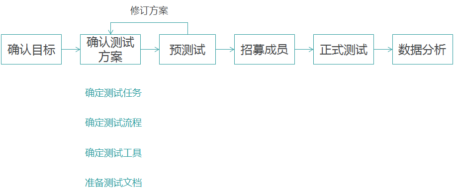
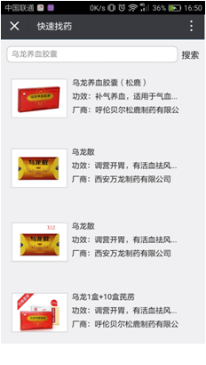
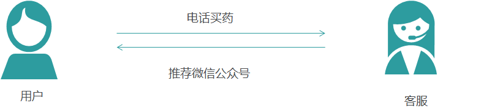

可用性测试
可用性测试是在产品或产品原型阶段实施的通过观察或访谈或二者相结合的方法，发现产品或产品原型存在的可用性问题，为设计改进提供依据。可用性测试不是用来评估产品整体的用户体验，主要是发现潜在的误解或功能在使用时存在的错误。
可用性测试一般流程：

可用性测试的人数范围：
据统计5名用户大约可以发现85%的问题。一般在迭代测试中，用户数量一般控制在5-10个。
测试：
测试前：
1.高保真原型设计
2.任务设计
3.人员招募
1.高保真原型设计


此次由于页面操作较为简单，因此采用墨刀进行高保真原型设计。
2.任务设计
根据用户背景，细致描述用户使用场景。
构建人物背景：
你在健客网上买过药，健客网的药师给你推荐了健康服务管理中心这个微信公众号，说有问题可以在上面进行提问，所以你关注了健康服务管理中心这个微信公众号。

任务清单：
1.场景：你因为胸闷在家附近药店在医师的推荐下买了乌龙散，但在乌龙散的说明书上看见和它很多药都不能同时服用,自己平时因为经常头晕一直在吃首乌片的药，现在不知道乌龙散和首乌片能不能同时服用，所以想在微信公众号上的得到解决。
2.场景：你最近总觉得有点心悸，之前看过一篇健康类的文章说乌龙散貌似可以治疗，想先去查看一下这个药品的详细信息，确认这个药品功效，合适的话就去购买。
3.场景：你最近胸闷，路过家里附近的小巷子里的诊所，诊所很破，但附近大药房要很远；然后跟医生说了自己胸闷，然后医生二话不说就开了个叫乌龙散的药，感觉名字好奇怪，而且诊所看不起来很不可信，觉得这会不会是个假药，想检验一下该药品是否存在。
4.场景:上次在这里买药了,回去吃了之后觉得效果很不错，而且你觉得医师的建议也很好很有效；那个医师说以后有什么疑问就找他,现在因为最近胸闷想买药,想再找他。
测试进行时：
测试现场准备工作：
工具：高保真原型、手机录屏工具、手机录像工具
参与人员：用户、主持人、助手
人员角色：
主持人：跟用户说明测试目的以及宣读任务，观察记录用户操作
助手：摄像
用户：根据场景任务进行操作
测试现场流程：
开场白：
跟用户介绍这次测试的目的以及我们的测试目标是产品而不是用户。
任务宣读：
详细为用户解读用户可能处在的场景，尽量让用户理解场景并代入场景。
观察操作：
为用户宣读完场景任务之后观察用户的操作，并记录异常的操作。
测试回访：
回访问题：
1.请问这个功能有没有满足到你的目标
2.使用过程中你觉得不顺利的地方有哪些？
3.刚刚你这样操作（记录的异常操作）的原因是什么？
4.你对这个产品的整体使用感受是什么

测试总结：